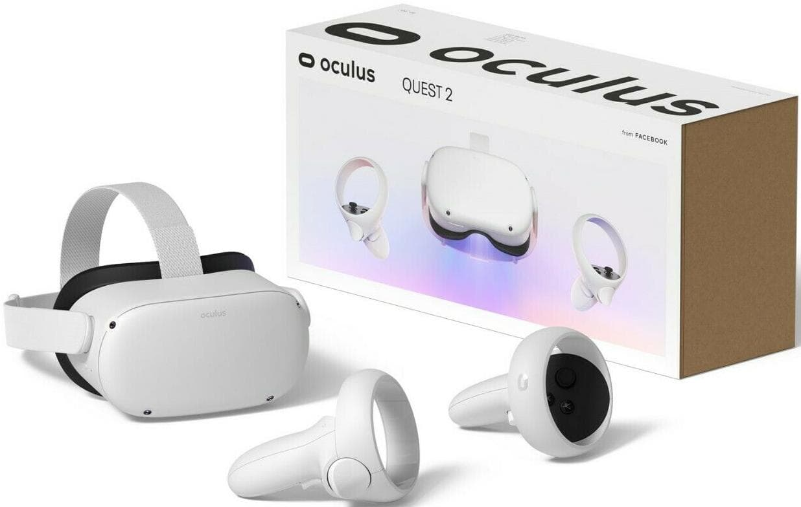

Современные очки виртуальной реальности – это синоним «шлема VR». Как устроена работа очков? Внутри расположено две линзы, на которые транслируется изображение со смартфона или персонального компьютера. В зависимости от типа устройства, из ПК или телефона передается адаптированная картинка, отдельная для каждого глаза. Очки разделяют изображение, которое видит левый и правый глаз при помощи специальной перегородки. Подготовка изображений и видео для виртуальной реальности также требует особых процедур. Снимается картинка двумя камерами – каждая снимает изображение для обеих глаз. Ставятся камеры на расстоянии, на котором приблизительно находятся и человеческие глаза. По такому же принципу выстраивается 3D реальность программистами. Когда каждый глаз видит свою картинку, ситуация максимально приближается к реальной жизни – создается ощущение полного погружения. По крайней мере, технология предусматривает именно такое ощущение. Однако, сегодня технологии создания графики и изображений, дисплеев, не позволяют реализовать VR технологию полностью: картинка получается слишком размытой и не похожа на реальную. Даже если взять большое разрешение от 1290 и выше по ширине, то оно должно разделиться на два глаза, да еще и быть панорамным. Но разработки идут в сторону улучшения качества картинки.В итоге сделаем вывод:если хотите испытать что то новое- очки виртуальной реальности вам помогут